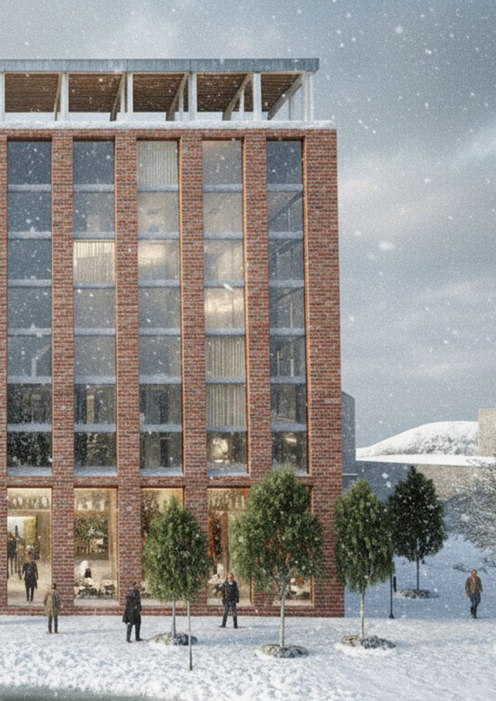
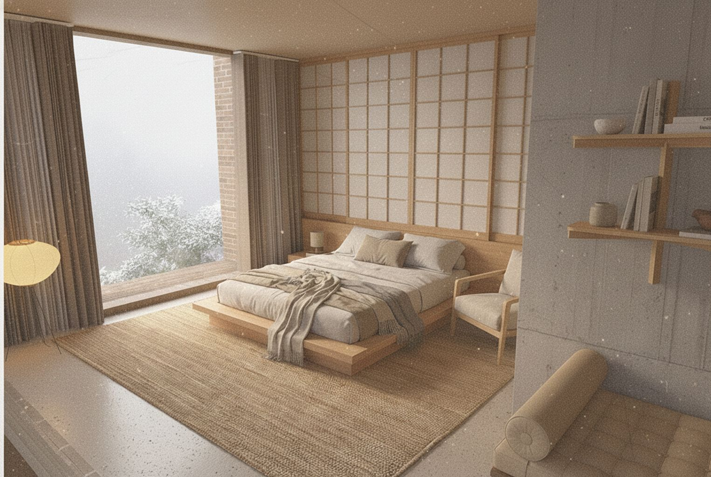
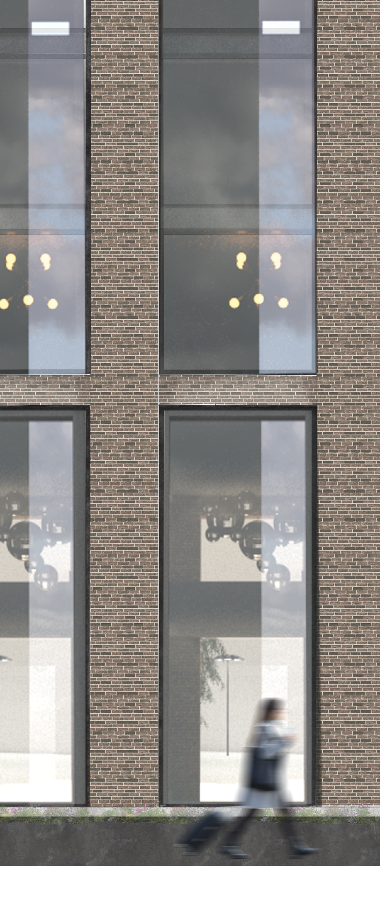

Hotell i stadsmiljö
Projektet är ett visualiseringsarbete av ett hotell beläget vid Klippan i Göteborg, ett område präglat av industriell historia och ett rikt kulturliv. Hotellets gestaltning tar avstamp i platsens karaktär genom en tydlig materialitet i rött tegel och en vertikal rytm av kraftfulla pelare.

Material & konstruktion
Generösa glasade partier skapar transparens, dagsljus och visuell kontakt mellan byggnadens inre och det offentliga rummet. Den bärande konstruktionen görs delvis synlig och integreras som ett arkitektoniskt motiv.


